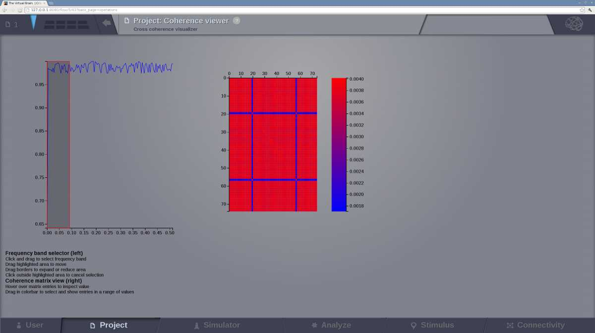

Analyze
This area offers a set of techniques for data analysis.

Current available analyzers
The Analysis area has several interfaces that support the following operations for time-series analysis:
- Cross-correlation of nodes
- Fourier Spectral Analysis
- Global TimeSeries Metrics
- Cross coherence of nodes
- Temporal covariance of nodes
- Principal Component Analysis
- Independent Component Analysis
- Continuous Wavelet Transform
Cross-correlation of nodes
Compute pairwise temporal cross-correlation of all nodes in a 4D TimeSeries object. Cross-correlation, or normalized cross-covariance, is a measure that quantifies the degree of linear dependence between two time-series.
To calculate the correlation coefficient of all nodes of a given multi-node time-series, simply select the TimeSeries object from the drop-down list in the Cross-correlation of nodes interface and hit Launch.
The algorithm returns a CrossCorrelation object that contains cross correlation coefficients for all possible combinations of nodes. Results are visualized with the Correlation viewer.
Pearson Correlation Coefficient
To calculate the Pearson correlation coefficient of all nodes of a given multi-node time-series, simply select the TimeSeries object from the drop-down list in the Pearson Correlation Coefficient analyzer interface and hit Launch.
The algorithm returns a CorrelationCoefficient object that contains cross correlation coefficients for all possible combinations of nodes. Results are visualized with the Pearson Correlation Coefficient viewer.
Fourier Spectral Analysis
Compute a fast Fourier transform (FFT) of a TimeSeries object. FFT is an algorithm to compute the discrete Fourier transform (DFT) and its inverse for a 1 given sequence of values. DFT transforms a function into its frequency-domain representation, that is, a sum of weighted sinusoids while preserving all of the information about the original signal. After decomposing the signal, spectrum analysis quantifies the relative amounts of amplitudes, powers, intensities or phases of a component versus its frequency.
In order to perform a Fourier analysis of your time-series data follow these steps:
- Go to the Fourier Spectral Analysis interface and select a Windowing function, you can choose among ‘hamming’, ‘bartlett’, ‘blackman’ and ‘hanning’.
- Select the time-series.
- Select a segment length.
- Hit Launch.
TimeSeries Metrics
Calculate one scalar metric to characterize the time-series dataset.
Cross coherence of nodes
Calculate pairwise temporal coherence of all nodes in a 4D TimeSeries object. Coherence analysis, or cross-spectral analysis, can be used to estimate how two time series are related in the spectral domain. Cross-coherence indicates the degree to which amplitude and phase between two signals relate to each other as a function of frequency.
To calculate the cross-coherence of all nodes of a given multi-node time-series, simply select the TimeSeries object from the drop-down list in the Cross coherence of nodes interface, select an appropriate measure for data-point per block, and hit Launch.
The resulting coherence spectrum can be viewed with the Cross coherence visualizer.
Complex coherence of nodes
To calculate the complex-cross-coherence of all nodes of a given multi-node time-series, simply select the TimeSeries object from the drop-down list in the Complex coherence of nodes interface and hit Launch.
The resulting coherence spectrum can be viewed with the Complex coherence visualizer.

Temporal covariance of nodes
Compute pairwise temporal covariance of all nodes in a 4D TimeSeries object. Covariance resembles the un-normalized correlation coefficient and measures how much two time-series change together.
To calculate the temporal covariance of all nodes of a given multi-node time-series, select the TimeSeries object from the drop-down list in the Independent Component Analysis interface and hit Launch.
The algorithm returns a Covariance object that is a 4D-Matrix with the Dimensions {nodes, nodes, 1, 1}. The resulting covariance matrix can be viewed with the Covariance visualizer.

Principal Component Analysis (PCA)
Compute a PCA of a 4D TimeSeries object. PCA is a computational method for multivariate data analysis that uses an orthogonal transformation to convert a set of (possibly correlated) variables into a set of linearly uncorrelated variables called principal components.
To calculate a PCA of all nodes of a given multi-node time-series, select the 4D-TimeSeries object from the drop-down list in the Principal Components Analysis interface and hit Launch.
The algorithm returns an PrincipalComponents object that is a xD-Matrix with the Dimensions {x,y,z}. The resulting time-series can be viewed with the Pca viewer.

Independent Component Analysis (ICA)
Compute a time-domain ICA decomposition of a 4D TimeSeries object. ICA is a statistical and computational method for separating a multivariate signal into additive subcomponents by maximizing the mutual statistical independence of source signals.
To calculate a temporal ICA of all nodes of a given multi-node time-series, select the 4D-TimeSeries object from the drop-down list in the Independent Component Analysis interface and hit Launch.
The algorithm returns an IndependentComponents object that is a xD-Matrix with the Dimensions {x,y,z}. The resulting time-series can be viewed with the the corresponding ICA viewer.
Continuous Wavelet Transform (CWT)
Compute a CWT of a 4D TimeSeries object. CWT decomposes a signal into wavelets of different frequencies yielding a time-frequency representation of the signal.
To calculate a CWT of all nodes of a given multi-node time-series, select the 4D-TimeSeries object from the drop-down list in the Continuous Wavelet Transform interface, specify transformation parameters like:
- mother wavelet function
- frequency resolution and range
- type of the normalization for the resulting wavelet spectrum
- Q-ratio
- Sampling period of the spectrum
and hit Launch.
The algorithm returns an WaveletCoefficients object that is a xD-Matrix with the Dimensions {x,y,z}. The resulting spectrogram of wavelet power can be viewed with the Wavelet viewer.

Brain Connectivity Toolbox Analyzers
If you have matlab or octave installed and available through the command line then all the algorithms offered by Brain Connectivity Toolbox (BCT) can be used directly from TheVirtualBrain interface and the results can later be displayed in one of our visualizers.
Additional BCT techniques are:
- Degree and Similarity Algorithms
- Centrality Algorithms
- Distance Algorithms
- Modularity Algorithms
- Clustering Algorithms
- Density Algorithms
For more details, please refer to BCT web site
TVB Analyzers
Variance of Node Variance
Zero-centres all the time-series, calculates the variance for each node time-series and returns the variance of the node variances.
Input: TimeSeries datatype
Output: Float
This is a crude indicator of how different the "excitability" of the model is from node to node.
traits on this class:
- time_series (Time Series)
Node Coherence
traits on this class:
- nfft (Data-points per block)
- time_series (Time Series)
Node Covariance
Compute the temporal covariance of nodes in a TimeSeries dataType. A nodes x nodes matrix is returned for each (state-variable, mode).
traits on this class:
- time_series (Time Series)
Principal Components Analysis
Return principal component weights and the fraction of the variance that they explain.
PCA takes time-points as observations and nodes as variables.
- NOTE: The TimeSeries must be longer(more time-points) than the number of
- nodes -- Mostly a problem for TimeSeriesSurface datatypes, which, if sampled at 1024Hz, would need to be greater than 16 seconds long.
traits on this class:
- time_series (Time Series)
Independent Component Analysis
Takes a TimeSeries datatype (x) and returns the unmixed temporal sources (S) and the estimated mixing matrix (A).
math: x = AS ICA takes time-points as observations and nodes as variables.
It uses the fastICA algorithm implemented in the scikit-learn toolkit, and its intended usage is as a blind source separation method.
Before the fastICA algorithm can be applied, the input vector data should be whitened (sphering). This means that any correlations in the data are removed, i.e. the signals are forced to be uncorrelated. To this end, the whiten parameter is always set to True.
- NOTE: As for PCA the TimeSeries datatype must be longer (more time-points)
- than the number of nodes -- Mostly a problem for TimeSeriesSurface datatypes, which, if sampled at 1024Hz, would need to be greater than 16 seconds long.
traits on this class:
- n_components (Number of components to extract)
- time_series (Time Series)
Cross-correlation
Compute the node-pairwise cross-correlation of the given input 4D TimeSeries datatype.
Return a CrossCorrelation datatype. It contains the cross-correlation sequences for all possible combinations of the nodes.
See: http://www.scipy.org/doc/api_docs/SciPy.signal.signaltools.html#correlate
traits on this class:
- time_series (Time Series)
Global Variance
Zero-centres all the time-series and then calculates the variance over all data points.
Input: TimeSeries datatype
Output: Float
This is a crude indicator of "excitability" or oscillation amplitude of the models over the entire network.
traits on this class:
- time_series (Time Series)
Node Complex Coherence
A class for calculating the FFT of a TimeSeries and returning a ComplexCoherenceSpectrum datatype.
- This algorithm is based on the matlab function data2cs_event.m written by Guido Nolte:
[Freyer_2012] Freyer, F.; Reinacher, M.; Nolte, G.; Dinse, H. R. and Ritter, P. * Repetitive tactile stimulation changes resting-state functional connectivity-implications for treatment of sensorimotor decline.* Front Hum Neurosci, Bernstein Focus State Dependencies of Learning and Bernstein Center for Computational Neuroscience Berlin, Germany., 2012, 6, 144 Input: originally the input could be 2D (tpts x nodes/channels), and it was possible to give a 3D array (e.g., tpspt x nodes/cahnnels x trials) via the segment_length attribute. Current TVB implementation can handle 4D or 2D TimeSeries datatypes. Be warned: the 4D TimeSeries will be averaged and squeezed.
Output: (main arrays) - the cross-spectrum - the complex coherence, from which the imaginary part can be extracted
By default the time series is segmented into 1 second epoch blocks and 0.5 second 50% overlapping segments to which a Hanning function is applied.
traits on this class:
- average_segments (Average across segments)
- detrend_ts (Detrend time series)
- epoch_length (Epoch length [ms])
- max_freq (Maximum frequency)
- npat (dummy variable)
- segment_length (Segment length [ms])
- segment_shift (Segment shift [ms])
- subtract_epoch_average (Subtract average across epochs)
- time_series (Time Series)
- window_function (Windowing function)
- zeropad (Zeropadding)
Wavelet
A class for calculating the wavelet transform of a TimeSeries object of TVB and returning a WaveletSpectrum object. The sampling period and frequency range of the result can be specified. The mother wavelet can also be specified... (So far, only Morlet.)
- References:
[TBetal_1996] C. Tallon-Baudry et al, Stimulus Specificity of Phase-Locked and Non-Phase-Locked 40 Hz Visual Responses in Human., J Neurosci 16(13):4240-4249, 1996.
[Mallat_1999] S. Mallat, A wavelet tour of signal processing., book, Academic Press, 1999. traits on this class:
- frequencies (Frequency range of result (kHz).)
- mother (Wavelet function)
- normalisation (Normalisation)
- q_ratio (Q-ratio)
- sample_period (Sample period of result (ms))
- time_series (Time Series)
Fast Fourier Transform (FFT)
A class for calculating the FFT of a TimeSeries object of TVB and returning a FourierSpectrum object. A segment length and windowing function can be optionally specified. By default the time series is segmented into 1 second blocks and no windowing function is applied.
traits on this class:
- segment_length (Segment(window) length (ms))
- time_series (Time Series)
- window_function (Windowing function)
Kuramoto Index
Return the Kuramoto synchronization index.
Useful metric for a parameter analysis when the collective brain dynamics represent coupled oscillatory processes.
The order parameters are \(r\) and \(Psi\) .
\begin{equation*} r e^{i * \psi} = \frac{1}{N}\,\sum_{k=1}^N(e^{i*\theta_k}) \end{equation*}The first is the phase coherence of the population of oscillators (KSI) and the second is the average phase.
When \(r=0\) means 0 coherence among oscillators.
Input: TimeSeries datatype
Output: Float
This is a crude indicator of synchronization among nodes over the entire network.
#NOTE: For the time being it is meant to be another global metric. However, it should be consider to have a sort of TimeSeriesDatatype for this analyzer.
traits on this class:
- time_series (Time Series)